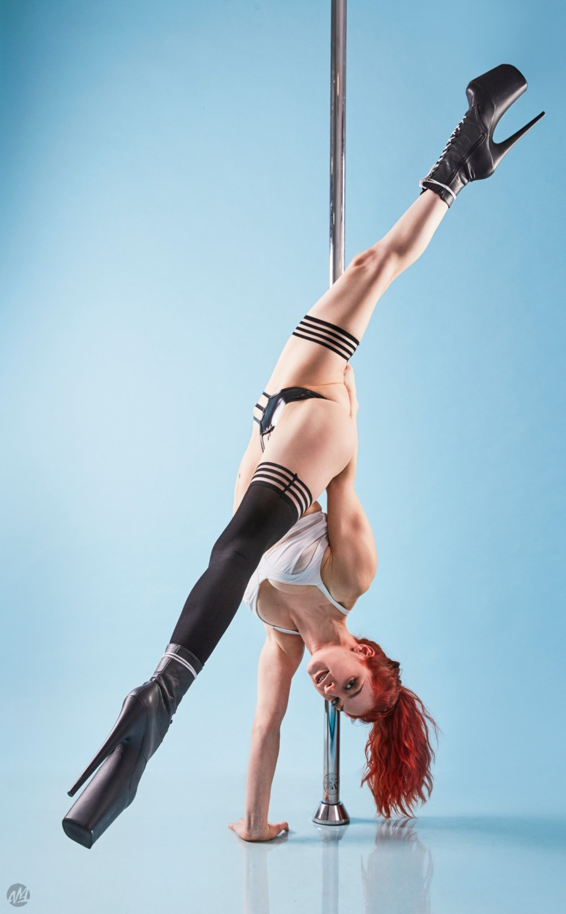

Se hizo famoso a partir de los años 80, relacionado con los clubes nocturnos y las salas de fiesta, donde se
ofrecían shows eróticos con bailarinas.
Pero el pole dance, es mucho más que eso. De hecho, hoy en día no tiene nada que ver con sus inicios.
Ha conseguido despojarse de esa visión negativa, convirtiéndose en una práctica deportiva, reconocida
internacionalmente, y está además, aunque a muchos les suene raro, en la lista que estudia el COI para
integrar algún día a unos Juegos Olímpicos. De momento, cumple tres de sus requisitos básicos: es
practicado en muchos países, tiene una federación internacional y su propio campeonato.
Forman parte incluso del repertorio de espectáculos tan afamados como los del Cirque du Soleil. Y es que
su práctica es muy completa.
Se trata de una disciplina que combina gimnasia, acrobacia y baile
Se destacan 4 ramas principales, con estilos muy distintos, pero algo en común: La barra
Pole Sport
El pole sport es la modalidad más deportiva del pole dance. Se basa en la ejecución de figuras, giros, dead
lifts (subidas de peso muerto) y demás movimientos incluidos en el código de puntuación de la federación
internacional de pole sports (IPSF).
Se busca la perfección en la ejecución de cada uno de los movimientos que forman una rutina de 4 minutos de
duración y para ello se someten a evaluación bajo un complejo sistema de puntuación. Se presta especial
atención al ángulo correcto de las lineas del cuerpo, sostener la figura por un mínimo de tiempo
establecido, o realizar giros completos de 360º o 720º dependiendo de si estamos trabajando con barra fija o
giratoria. El nivel de exigencia física de este tipo de ejercicios es muy elevada ya que el atleta trabaja
ejercicios de fuerza y de flexibilidad intensa a la par que se compaginan movimientos aeróbicos que forman
la rutina completa. Anualmente se celebran campeonatos nacionales que seleccionan a los mejores atletas de
cada país para celebrar el campeonato del mundo de pole sport que reúne a los mejores atletas año tras año.
Pole Fitness
El pole dance fitness es una modalidad del pole dance orientada a la gimnasia y a la práctica en gimnasios
como actividad para ejercitar en cuerpo de una manera diferente. Aunque no tan estricta como el pole sport,
se trabajan ejercicios de fuerza flexibilidad, resistencia, coordinación entre otros. Generalmente no está
orientado a la competición, sino a la practica de pole dance como hobbie. Su fin es conseguir la mejora de
nuestra condición física ganado fuerza, flexibilidad, coordinación de una manera más laxa como actividad de
ocio y tiempo libre.
Pole Exotic

El exotic pole es la modalidad más sensual del pole dance, no se busca la dificultad de los movimientos ni la
consecución de determinadas figuras. Se centra en la sensualidad, en la seducción, haciendo que aquella
persona que lo practica se sienta sexy, sensual, atrevida, provocadora y gane confianza en si misma,
disfrute de su sensualidad y de su cuerpo, y se guste a si misma. Uno de los factores más importantes en el
exotic pole es la fluidez en los movimientos de manera que se vayan uniendo en transiciones suaves y que el
resultados final sea elegante, limpio y fluido.
Generalmente el exotic pole usa como complemento indispensable los Pleaser, zapatos de pole dance de tacón
con una elevada plataforma. Por lo general en la práctica de exotic pole se realizan con más abundancia
ejercicios en suelo (low flow) lo cual hace necesario el uso de rodilleras para evitar heridas y roces
provocados del contacto continuo con el suelo y también posibles lesiones.
Pole Coreográfico
El pole art es la modalidad más artística del pole dance.
Su fundamento principal es conseguir la expresión del cuerpo como un arte, para el disfrute del artista y
del espectador, entra en juego la expresión corporal, vestimenta, el sentimiento de la música, la
interpretación en un estilo mucho más libre. Podemos encontrar competiciones específicas de artistic pole
divididas incluso en diferentes categorías (drama, comedia, terror...). El pole artístico atrae a gran
cantidad de atletas ya que las normativas en los campeonatos suelen ser más abiertas y dependen de un
componente más subjetivo de que guste al público, a los jueces y ofrecen la libertad al atleta de expresar
aquello que más desee. Se busca sorprender, enganchar al público, ofrecen algo nuevo y diferente que capte
la atención de aquellos que disfrutan del espectáculo.
HISTORIA DEL POLE
Existen registros históricos de hace 800 años aproximadamente con antiguos deportes de la India. Uno de los
que aparece es el Mallakhamb, un deporte tradicional indio que utilizaba principios similares a los del pole
dance actual. Las acrobacias y bailes se realizaban en altos postes de madera.
Por el mismo tiempo (siglo XII) y traído desde la originaria India, en China surge el palo chino. Este
deporte, que todavía se practica, consiste en dos postes verticales de unos 6 metros de altura y cubiertos
de goma en los que el artista realiza temerarias acrobacias saltando de uno a otro.
Los siguientes registros históricos datan de fechas más cercanas a nuestro tiempo y se desconoce la
existencia de relación alguna con el Mallakhamb o las Barras Chinas.
En 1890 en Estados Unidos, en el barrio Little Egypt, surgen espectáculos de bailes provocativos como el
belly dance (baile del vientre) que causan agitaciones en una época donde las mujeres debían vestir
modestamente.
Estos bailes, usualmente realizados por gitanas de Medio Oriente o de Europa del Este, eran una fuente de
entretenimiento para el pueblo y pronto fueron incorporados a los circos estadounidenses.
A principios del siglo XX, las bailarinas dan origen y comienzan a utilizar el poste principal al centro de
la carpa del circo para atraer a una audiencia más grande. Con sus cortas faldas trepaban hasta la cima y al
bajar iban realizando giros y piruetas que, sumado a su provocativa indumentaria, enloquecían al espectador.
A este tipo de danza se le pasaría a conocer como Hoochie Coochie.
En la década de 1920, los bailes hoochie coochie terminarían reemplazando al can-can como la elección
atrevida de la danza en la ciudad de Nueva York. Serían la base e inspiración para una futura generación de
estilos de baile, incluido el baile burlesque y el pole dance.
Unos años más tarde, en la década de 1950, el pole dance se muda de las tiendas de circo a los clubes y
bares nocturnos Tal era su auge que en 1957 el Rey del Rock and Roll, Elvis Presley, incluye en el vídeo
clip de tu tema Jailhouse Rock una barra por la que baja y danza.
Solo una década después, durante lo que muchos llaman la “revolución sexual” de los años 60, en los clubes
nocturnos de Estados Unidos y Canadá se instalan de manera masiva barras de latón en los escenarios para que
no faltara el show de bailarinas seductoras con trajes temáticos al ritmo de la música.
No faltó mucho para que se perdiera el tono temático y que la ropa fuera desapareciendo. En la década de los
80 predominaban el baile erótico y el striptease completo, con desnudez total, como parte del
entretenimiento del club. Contrario a lo que uno esperaría de esta situación, su furor ayudó a su
desarrollo.
Dos dueños de un club de estripers en Canadá notaron el potencial de estos bailes y abrieron su propio
estudio para capacitar a las bailarinas. Pronto se incorporó al baile movimientos atléticos y coreográficos
que requerían capacidad y práctica y muchas bailarinas comenzaron a abrir sus propios escuelas.

.jpg)